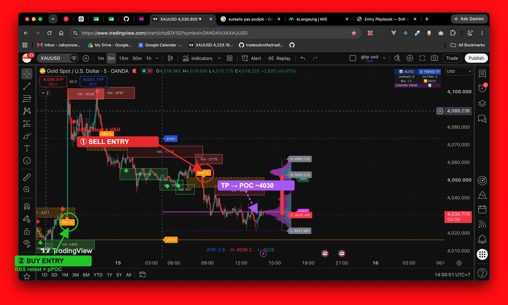

Scalping XAU · USDJPY · EURUSD · GBPUSD · Sesi malam (mulai 19:00 WIB) · Workflow M15 → M5 → M1
| Indikator | Elemen | Arti |
|---|---|---|
| SnR | Box hijau + ◆ hijau (bawah) | Support hold → bias BUY |
| SnR | Box merah + ◆ merah (atas) | Resistance hold → bias SELL |
| SnR | Zona oranye RBS ⚠ | Resistance jebol → jadi support → BUY saat retest |
| SnR | Zona oranye SBR ⚠ | Support jebol → jadi resistance → SELL saat retest |
| SVP | VAL / pVAL | Batas bawah value area → area BUY |
| SVP | VAH / pVAH | Batas atas value area → area SELL |
| SVP | POC / pPOC | Magnet harga → target TP / area balik arah |
Prefix p = level dari sesi sebelumnya (prior-day), mis. pPOC = naked POC kemarin.
Lihat zona SnR utama + posisi harga terhadap POC & prior-day (pPOC/pVAH/pVAL). Harga di atas value area & mantul support = bias BUY. Di bawah & tolak resistance = bias SELL. Bias tidak jelas → SKIP.
Struktur searah bias M15 (higher-low untuk buy / lower-high untuk sell). Pastikan ada zona SnR M5 yang nyambung dengan level SVP (VAL/VAH/POC). Ini yang menaikkan kelas setup.
Tunggu harga retest level confluence tadi. Trigger = ◆ diamond muncul + candle rejection (pin/engulf). Masuk saat candle trigger close.

XAUUSD · M5 · OANDA — dua setup confluence dalam satu layar. ① SELL di zona SBR × VAH → TP ke POC · ② BUY di zona RBS × pPOC. Daily candle bearish (O 4053.2 → C 4030.4), jadi bias utama SELL menuju POC di bawah.
| Tahap | Yang terjadi di chart |
|---|---|
| Bias | Daily bearish (tutup 4030 < buka 4053), harga di bawah value area → cari SELL |
| Setup | Support jebol → label SBR ⚠ di ~4050–4053 |
| Confluence | Zona SBR ≈ VAH + numpuk box resistance (Vol −1713 / −2775) → triple confluence |
| Entry | ◆ merah + candle rejection saat retest SBR dari bawah |
| SL | Di atas box SBR / di atas VAH (≈ High 4062) |
| TP | POC magnet ~4030 — harga meluncur ~23 poin, lanjut ke pPOC |
| Tahap | Yang terjadi di chart |
|---|---|
| Bias | Harga bounce dari area bawah dekat pPOC (naked POC kemarin) → cari BUY |
| Setup | Resistance jebol → label RBS ⚠ (kiri bawah chart) |
| Confluence | Zona RBS ≈ pPOC → magnet prior-day = level kuat |
| Entry | ◆ hijau + candle rejection saat retest RBS dari atas |
| SL | Di bawah box RBS + buffer 5–10 pip |
| TP | Rally naik ke zona SBR/VAH di atas (lihat candle hijau panjang) |
Pakai tabel ATR di SVP untuk ukur buffer SL. XAU zonanya sudah auto +20% lebih lebar.
strategy-rules.md) untuk sekarang = cek manual/mata. Bisa ditempel EMA200 kecil
ke salah satu script nanti tanpa menambah indikator.